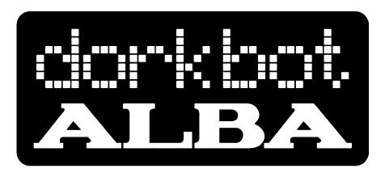

people doing strange things with electricity
dorkbot-alba
launch event
date/time: sunday 13 november 2005, from 4pm
location: the forest café, 3 bristo place, edinburgh
www.theforest.org.uk
speakers:
• richard brown
richard creates interactive artworks using multi-media technology, computer programming, electronics and interfacing. His book "biotica: art, emergence and artificial-life" was published in 2001. richard has recently completed a nesta fellowship and is currently on the epis entrepreneurial scheme hosted at edinburgh university.
• zoë irvine
zoë's practice includes installations, audio publications, net works and broadcasts which reflect her fascination with the medium of sound. her pieces often use episodes in literature or history as points of departure. zoë is currently developing a series of new voice works with support from a scottish arts council creative scotland award.
• martin ling
martin's background is in computer science and electronics. he is currently a researcher with the speckled computing project, aiming to develop complete wireless computers in a 5x5x5mm package. in particular he works on analogue and digital circuit design, and communication protocols for low power ad-hoc wireless networks.
music and visuals:
• operator
• peter piper
• vangelis lympouridis
• xhadrez
opendorks:
• pete hindle
pete is a new media artist based in newcastle. he will present his work "dueling etch-a-sketches", recently premiered at the platform05 festival. two etch-a-sketches linked up to a teleo input board, which then makes music generated by a max/msp patch.
documentation:
• photos
• videos (.torrent file, requires a bitorrent client to download video)